{
"UUID": "4cace50e-d8c3-4a56-903a-8aa106918446",
"Title": "Kanazawa (DSCF1074 – DSCF1138)",
"ShortDescription": "Select images from Kanazawa",
"Year": 2025,
"FeaturedWork": "FALSE",
"URL": "kanazawa",
"Modality": [
"Digital"
],
"Medium": [
"Photography"
],
"Tools": [
"Digital camera",
"Photoshop"
],
"Object": [
"Digital image"
],
"Collaborators": [],
"Keywords": [
"Geography",
"Self"
]
}Select images from Kanazawa, Japan (September 2025).
| * | Title | Size (bytes) | View |
|---|---|---|---|
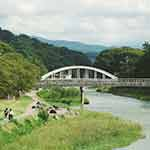 | Asano River | 253,117 | Load image |
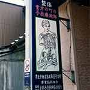 | Chiropractor | 257,030 | Load image |
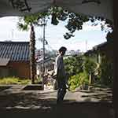 | Daniel | 223,902 | Load image |
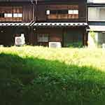 | House and yard | 250,705 | Load image |
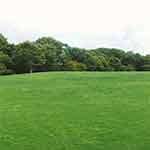 | Kanazawa Castle Park | 192,336 | Load image |
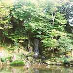 | Kenroku-en I | 392,195 | Load image |
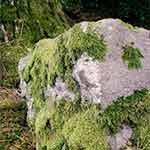 | Kenroku-en II | 382,836 | Load image |
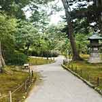 | Kenroku-en III | 353,762 | Load image |
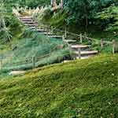 | Kenroku-en IV | 282,144 | Load image |
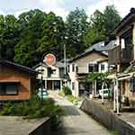 | Utatsumachi | 308,683 | Load image |
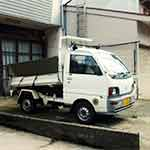 | Vehicle I | 206,141 | Load image |
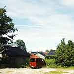 | Vehicle II | 260,658 | Load image |